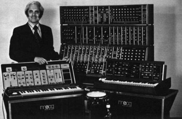

Saxomochrome
Playing the browser like a fiddle
Steve De Jonghe
Mandatory introduction slide
Warning
I have no clue what I am doing and I'm probably a bit too liberal about my music choices!
Overview
Why, though?
It's JavaScript, do you really need to ask?
In seriousness: Audio synthesizing hardware and software can be pretty expensive and lossless formats are pretty large. We all use a browser and having music defined in plaintext makes it more portable.
Why, though?
... But mostly just because we can!
What is sound?
Oscillation in pressure, stress, particle displacement, particle velocity, etc., propagated in a medium with internal forces (e.g., elastic or viscous), or the superposition of such propagated oscillation.
Say whaaaa?!

High pressure - low pressure
Long wavelength = lower frequency = lower pitch
Higher amplitude = higher power = higher volume
Terminology
Boring incomplete history time!
History: Teleharmonium

1897 - Teleharmonium: Considered the first synthetic instrument, used moving parts to generate sound. Weighted over 200 tons.
History: Theremin
1919 - Theremin: No physical contact. One antenna controlls pitch, other controls volume.
History: Coupleux-Givelet

1929 - Automatically Operating Musical Instrument of the Electric Oscillation Type: First instrument to be considered a synthesizer.
History: Electronic Sackbut

1945 - Electronic Sackbut: Closely resembles modern synthesizers, both in form and function.
History: Moog machine
1963 - Moog machine: First voltage-controlled synthesizer using diodes. Still used today.
History: MiniMoog

1970 - MiniMoog Model D: Small and affordable. About 13 000 units sold over 10 years.
History: PolyMoog

1975 - PolyMoog: Polyphonic version of the Moog machine, featured velocity-sensitive keys.
History: Roland TR-808 (and TR-909)
1980 - TR-808: Probably the most iconic drum machine. Still used today.
Web audio API basics
- Make an audio context
- Make an audio source in the context
- Make effects within the context
- Connect source to the effects
- Connect effects to the context destination
The audio context
The AudioContext interface represents an audio-processing graph built from audio modules linked together, each represented by an AudioNode. An audio context controls both the creation of the nodes it contains and the execution of the audio processing, or decoding. - MDN
The audio context
// Feature-test window.AudioContext
var context = new AudioContext();
Audio sources and effects
var osc = context.createOscillator(),
gain = context.createGain();
osc.type = 'sine'; // Default
osc.frequency.value = 440; // Default
osc.connect(gain);
gain.connect(context.destination);
osc.start();
Loading samples
var sampleBuffer,
url = 'samples/snare/cd_snare_80s.wav', // Thanks Nik!
request = new XMLHttpRequest();
request.open('GET', url, true);
// Set response type
request.responseType = 'arraybuffer';
request.onload = function() {
// Decode and store buffer
context.decodeAudioData(request.response, function(buffer) {
sampleBuffer = buffer;
});
}
request.send();
Playing a buffer
var playSound = function(buffer, time) {
var sample = context.createBufferSource();
sample.buffer = buffer;
//sample.loop = true;
sample.connect(context.destination);
sample.start(time);
}
playSound(sampleBuffer);
Timing
var startTime = context.currentTime + 0.1;
var tempo = 80; // BPM
var eighthNoteTime = (60 / tempo) / 2;
for (var bar = 0; bar < 2; bar++) {
var time = startTime + bar * 8 * eighthNoteTime;
// Play the toms on beats 1, 5
playSound(tomBuffer, time);
playSound(tomBuffer, time + 4 * eighthNoteTime);
// Play the snare drum on beats 3, 7
playSound(snareBuffer, time + 2 * eighthNoteTime);
playSound(snareBuffer, time + 6 * eighthNoteTime);
// Play the rim every eighthh note.
for (var i = 0; i < 8; ++i) {
playSound(rimBuffer, time + i * eighthNoteTime);
}
}
Timing
var startTime = context.currentTime + 0.1;
var tempo = 80; // BPM
var eighthNoteTime = (60 / tempo) / 2;
var channels = {
tom: [1, 0, 0, 0, 1, 0, 0, 0],
snare: [0, 0, 1, 0, 0, 0, 1, 0],
rim: [1, 1, 1, 1, 1, 1, 1, 1]
};
var pos = 0;
var play = function() {
['tom', 'snare', 'rim'].forEach(function(chan) {
if (channels[chan][pos]) {
playSound(buffers[chan]);
}
});
if (pos !== channels['tom'].length) {
pos++;
setTimeout(play, eighthNoteTime * 1000);
}
};
play();
Analysis
var analyser = context.createAnalyser();
var bufferLength = analyser.fftSize = 2048;
var dataArray = new Uint8Array(bufferLength);
analyser.minDecibels = -100;
analyser.maxDecibels = -10;
analyser.smoothingTimeConstant = 0.85;
canvasCtx.lineWidth = 2;
canvasCtx.strokeStyle = 'rgb(0, 0, 0)';
var draw = function() {
var sliceWidth = WIDTH / bufferLength;
var x = 0;
var v, y;
// Schedule next run
drawVisual = requestAnimationFrame(draw);
// clear previous frame
canvasCtx.clearRect(0, 0, WIDTH, HEIGHT);
// Update dataArray
analyser.getByteTimeDomainData(dataArray);
canvasCtx.beginPath();
for(var i = 0; i < bufferLength; i++) {
// Determine offset
v = dataArray[i] / 128.0;
y = v * HEIGHT/2;
// Special case first run
if(i === 0) {
canvasCtx.moveTo(x, y);
} else {
canvasCtx.lineTo(x, y);
}
// Next slice
x += sliceWidth;
}
// Wrap it up
canvasCtx.lineTo(canvas.width, canvas.height/2);
canvasCtx.stroke();
};
draw();
See MDN
Tone.js
DIY Ableton!- Comes with predefined instruments that are easy to tweak
- Fixes the issue with timing
- Automagically tempo-relative
- It knows pitch-octave notation (like G4)
Predefined instruments
// Make a new synth and connect it to the master output
var synth = new Tone.Synth().toMaster();
// Play a G4 for an eithth note
synth.triggerAttackRelease('G4', '8n');
metalSynth.triggerAttackRelease('8n');
Easy sampler
simpleSampler = new Tone.Sampler({
'C4' : 'samples/snare/cd_snare_80s.wav'
}).toMaster(),
Instruments up close
var synth = new Tone.DuoSynth({
vibratoAmount:0.3,
vibratoRate:5,
harmonicity:1.5
});
synth.triggetAttack('G4');
Let's get dynamic!
var synth = new Tone.DuoSynth();
// Simple wrapper to make a low-frequency oscillator with min/max
var synthLFO = new Tone.LFO(2, 0, 50);
// Connect LFO to vibratoAmount value
synthLFO.connect(synth.vibratoAmount);
// Start LFO
synthLFO.start();
synth.triggerAttack('G4');
Timing: Transport
var repeatID = Tone.Transport.scheduleRepeat(function(time) {
synth.triggerAttackRelease('C4', '8n');
}, '4n');
// set BPM and start the main transport
Tone.Transport.bpm.value = 120;
Tone.Transport.start();
Timing: sequencer
var sequence = ['C4', 'E4', 'G4', 'A4'];
var loop = new Tone.Sequence(function(time, note) {
synth.triggerAttackRelease(note, '8n');
}, sequence, '4n');
// Make it loop around twice
loop.loop = 2;
// Start the loop
loop.start();
// set BPM and start the main transport
Tone.Transport.bpm.value = 120;
Tone.Transport.start();
Offline rendering
// Prepare a player and hook it up to master
var player = new Tone.Player().toMaster();
// Render 1 minute
Tone.Offline(function(Transport) {
// Your code, timed on the passed in Transport
}, 60).then(function(buffer) {
player.buffer = buffer;
player.start();
});